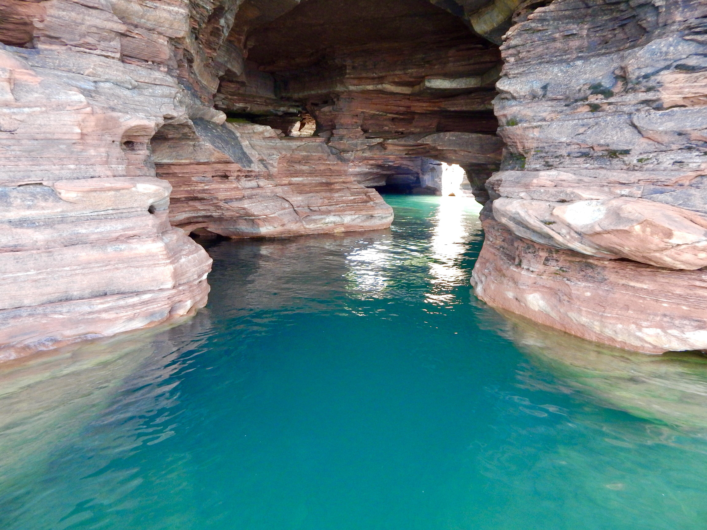

Top 10 Agricultural Products
- Dairy Products | $5.4 Billion
- Wisconsin has over 8,000 licensed dairy farms (most of which are family owned) and approximately 1.27 million dairy cows
- The state produces over 3.4 billion pounds of cheese per year, accounting for 26% of the nation's total
- Each dairy cow gives more than 7 gallons of milk each day, which is the equivalent of 112 glasses
- Cattle and Calves | $1.8 Billion
- Wisconsin is home to 290,000 head of beef cattle
- Although the state is better-known for its dairy production, there are actually 2,000 more beef cattle producers than dairy producers
- Corn | $1.4 Billion
- Wisconsin corn growers harvest about 545 million bushels per year from the 3.17 million acres of cornfields
- Corn produced in Wisconsin is mainly used for livestock feed, ethanol production, exports, or food
- Soybeans | $912.6 Million
- Wisconsin boasts nearly 2.2 million acres of soybeans
- Average yearly production is 105.8 million bushels
- Potatoes | $311.4 Million
- Wisconsin ranks third in the nation in potato production
- Farmers harvest potatoes from 71,000 acres
- Cranberries | $156.1 Million
- Cranberries are the state fruit of Wisconsin
- The state is home to 20,600 acres of cranberries or about 5.5 million barrels once harvested
- Wisconsin produces 64% of the nation's cranberry crop, making it easily the top cranberry producing state in the country
- Broilers | $122.9 Million
- Broilers are chickens raised specifically for their meat
- Hogs | $122.7 Million
- Wisconsin has 325,000 hogs
- Grant and Sauk counties are the largest hog producers in the state
- Chicken Eggs | $103.3 Million
- On a yearly basis, Wisconsin produces around 167 million eggs
- Statewide, there are 7.15 million layers (chickens raised to lay eggs)
- Hay | $95 Million
- Farmers across the state harvested 1.36 million acres of hay
- Production totals around 2.95 million tons
My Favorite Outdoor Spots
Apostle Islands

Door County
Devil's Lake State Park
My Favorite Places to Eat
Culver's
Al Johnson's Swedish Restaurant
Capitol Square
Cheese Curd Ratings for Wisconsin Businesses
How Cheese Curds are Made